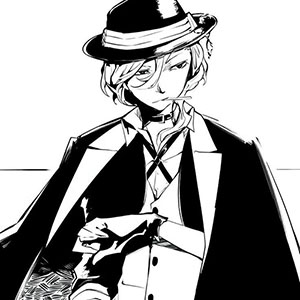
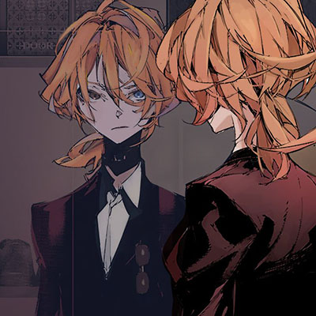
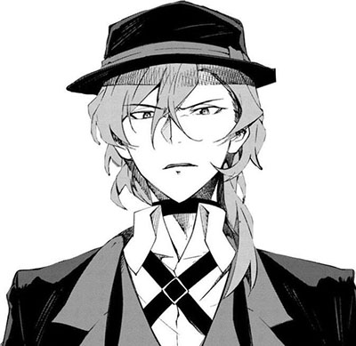
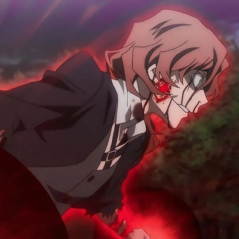
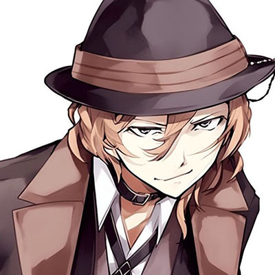

Chuuya is a bit short, yet has quite a musclular body type. He has blue eyes, and striking orange hair that frames his face, with a longer section that falls just past his left shoulder. He wears a black hat with a brown hatband and a thin silver chain that hangs over the brim. His outfit consists of a white button-up shirt under a grey vest, a black choker, a black ribbon bolo tie held together with a small silver buckle, an open black cropped jacket with the sleeves rolled up at the elbows, black slacks, a black belt hanging off his right hip and black low-arch shoes. He is almost always seen wearing black gloves. Chuuya also sports a long black coat with light-colored lining and lapels that he wears around his shoulders like a cape. The undercoat is a light shade of red.

Chuuya has quite of an explosive temper. He also might seem as arrogant and blunt man from the first sight. But the more you get to know him the more you learn that he's complitely diffrent. Chuuya is actully very loyal to his wards, even though he is the mafia's strongest martial artist. He isn't impossible to reason with. In fact, Chuuya's rather reasonable when no one is pushing his buttons. Ruthless as he is, he seldom takes people's lives for granted and knows the importance of compromise and rationality. He also has enough sense to know when enough's enough, unlike his ex-partner Dazai. In the past, Chuuya was the member of the "Sheep's" Organization. Reading his story, you can clearly see how he takes care of other members. Chuuya struggles with anger and trust issuies as well. As far as I noticed, he had these problems since the childhood because of how he was treated as a kid. Unfortunately, he was trapped by the wrong people and so many experiments were conducted on him. I think I should mention his relationship with his ex-partner Dazai. They might seem to be in bad relationship. But the way they actually care about each other and how each of them is literally can entrust their life is shown very well throughout the story. Chuuya knows most of the Dazai's fight habits and that's why they're usually shown as partners in most of the battles even though they're working in a different organizations.

His ability is called Upon the Tainted Sorrow. In short words, he can manipulate the gravity which allows him to control or make gravitations. He can also alter the garvity of anything he touches. That way, Chuuya can easily lift things, walk upsie down from ceiling or on the walls. But there is another side of his ability which can lead to a really bad outcome. The thing is that the more he uses his ability the higher are chances that he will lose consciousness. In worst case possible, he migth even die from it.
